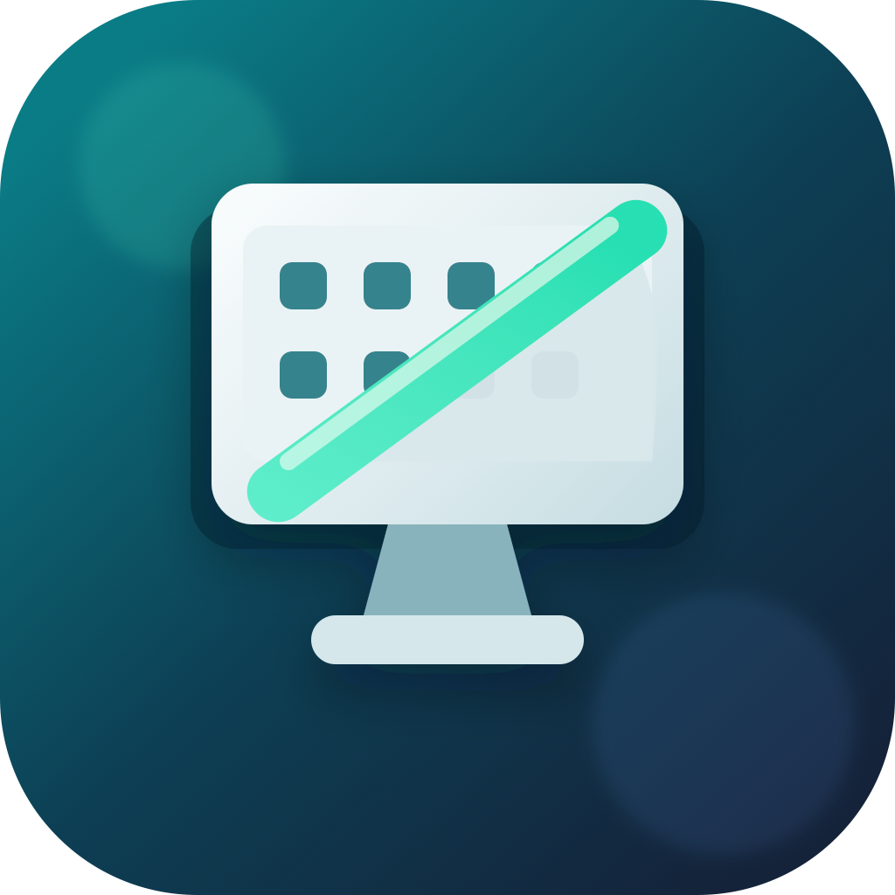

Hide the clutter
Use the menu bar item labeled Desk to hide desktop icons before a call or recording.
CleanScreen Drop
A tiny free Mac menu bar app for calmer demos, calls, and recordings. No account, no tracking, no file scanning.
V1 download

CleanScreen Drop v0.1.0
Download zipUse the menu bar item labeled Desk to hide desktop icons before a call or recording.
Use the same menu to bring desktop icons back without moving or deleting files.
The app changes Finder's desktop icon visibility only. It has no analytics, account, ads, or network sync.
Install
Checksum
aef024a94411e1995fbfa57763e43675435aadc4ef1fd40ccd35c70a97671a9c
Known V1 limitation: the menu bar entry is text-only and appears as Desk.